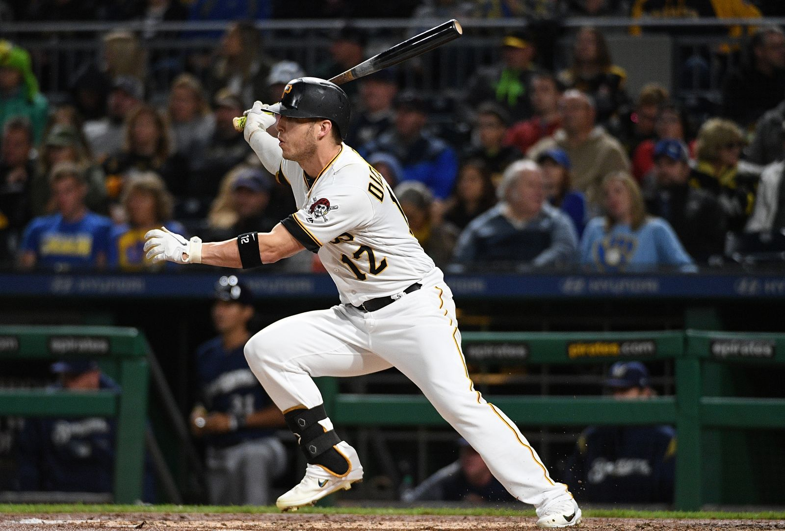

The Pittsburgh Pirates injuries this season have forced them to be to be having a slow start to the season especailly the injury to Left Fielder
Corey Dickerson it has had a huge impact on the way that the team performs this season. As he was one the their hitters and feilders all season long last year
with him missing time the team has struggled a lot. After his comeback from injury just recently the teams scuccess has changed and they are starting
win more games now.

Deliverable: Lab (Bio, HTML-only)
Name: Christopher Rynkun
Student #: 101136371
Email: christopher.rynkun@georgebrown.ca
Submitted: June 23, 2019
Notes: Hi!
[ ] I have reviewed the appropriate checklist before submitting this work
Please ensure your project folder includes your name *before* zipping. For example:
hopper-grace-lab-one